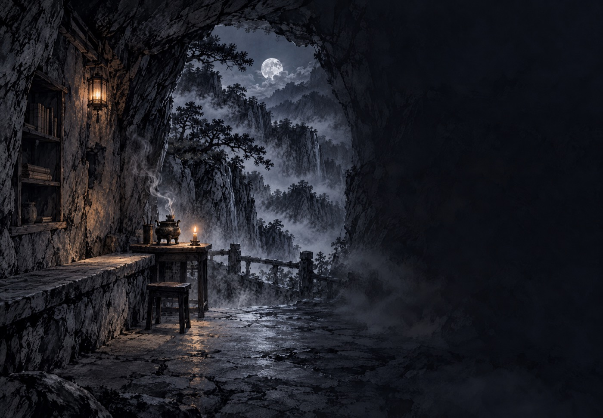
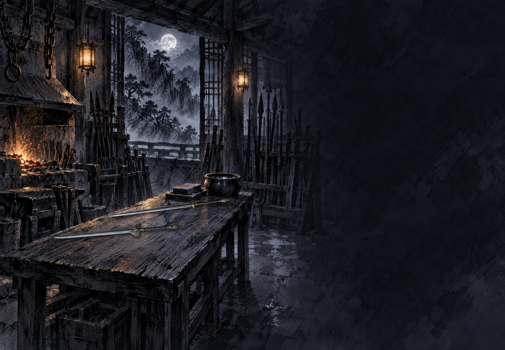
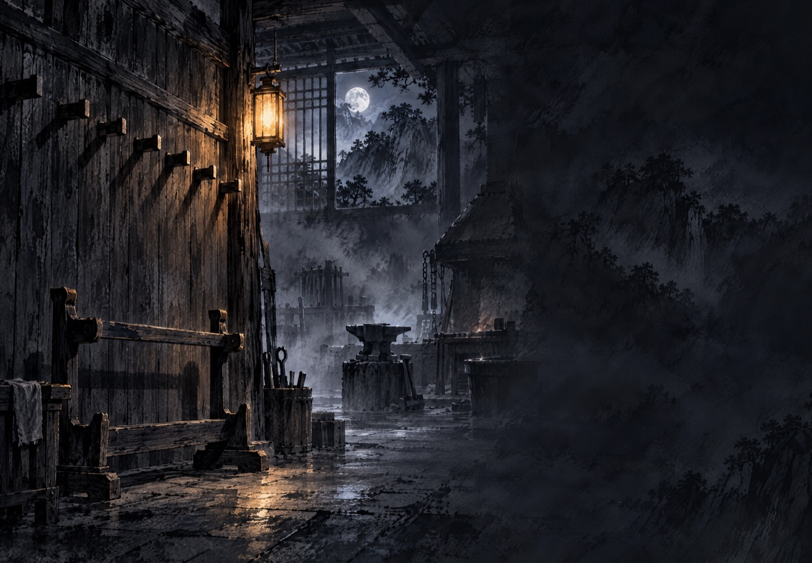
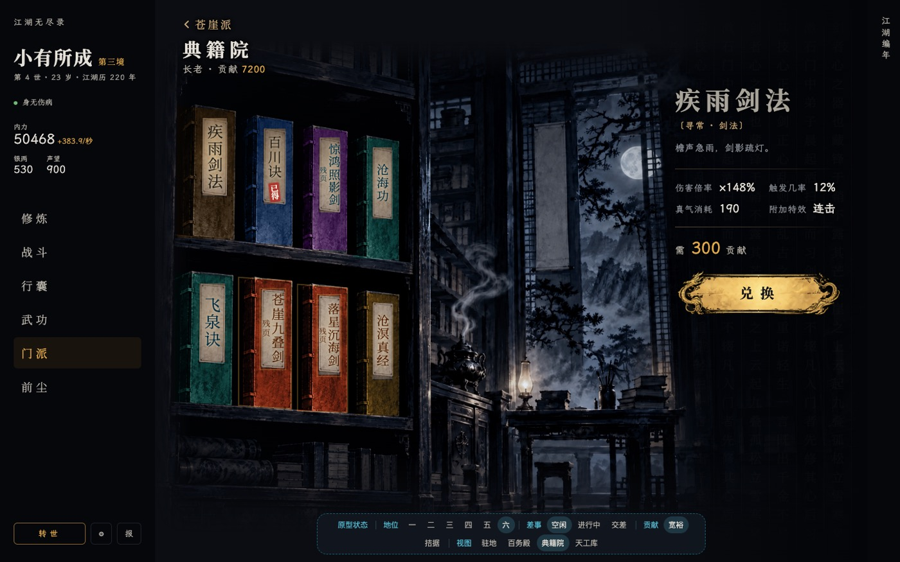
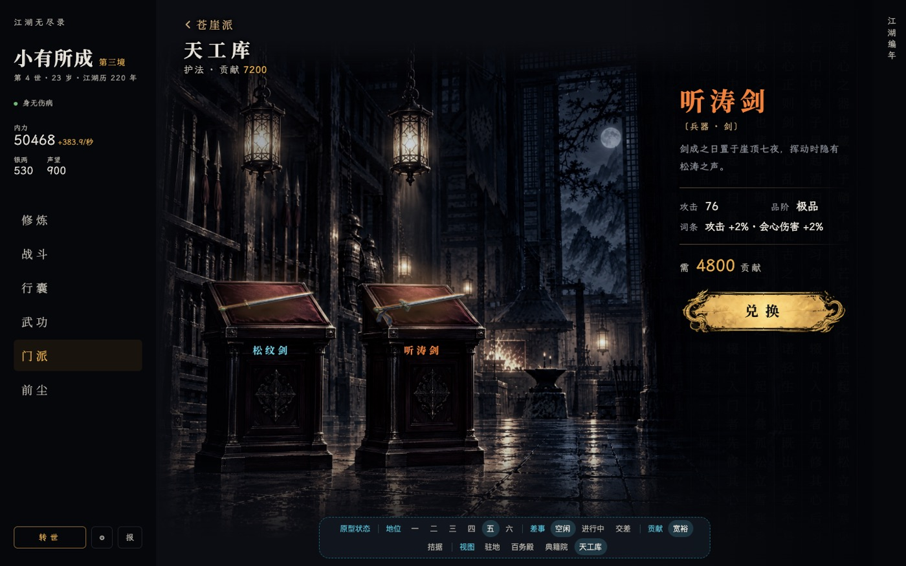

门派内景 · 典籍院与天工库方向挑选
做法统一改为：AI 只画空着的屋子（和驻地图同一套水墨），书和兵器用游戏里现成的书封、道具图由代码摆上去，不再给画里的东西染色、不再在斜面上贴平字。右图是摆上东西后的示意（示意用 PIL 粗摆，光影未精修，看构图与方向）。
一、典籍院
甲 · 长案摊书 · 一张长案，八本书架在书托上朝向读者，两排各四；案后书架、月窗。书封即现成的蓝 / 青 / 金三色线装书
乙 · 三层经架（推荐） · 正对读者的三层木架，书册立在架上封面朝外，上二中三下三；灯笼从上方照下来，书封不用做透视

丙 · 石室藏经 · 崖壁石室，一条石台沿壁，书放在石台上；最接近驻地图的山石气，但石台窄、放不下八本
二、天工库
甲 · 兵器架（推荐） · 中式双杆木架正对读者，兵器横挂在杆上，道具图原样挂上去，远处是冷掉的锻炉。徒手门派的手套、指套改放在架下的托板上

乙 · 工案平放 · 锻房里一张长工案，兵器平放在案上，磨刀石和水瓮在案尾；案面透视斜，兵器要压扁

丙 · 剑壁挂钩 · 木壁上一排空木楔和一座空剑架，兵器挂在楔上；画最沉静，但楔子是斜透视，挂上去的道具要做变形
对照：现状（已否）

函套染色、立着排排坐、字是平贴的

西式展台与红丝绒、剑缩成牙签、天蓝名字